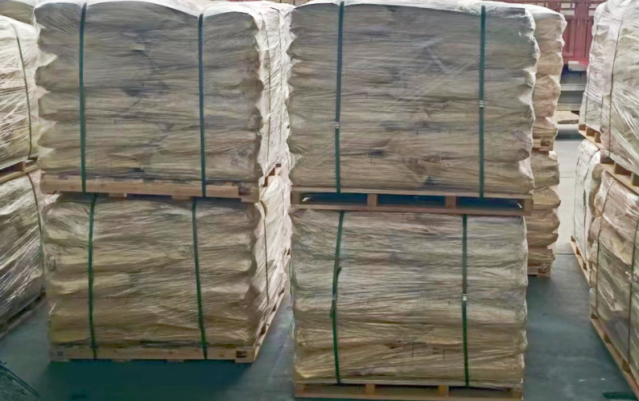
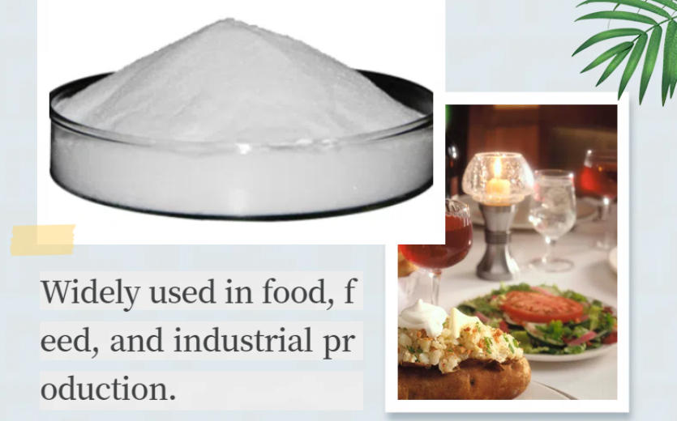
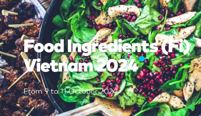
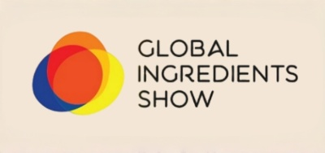
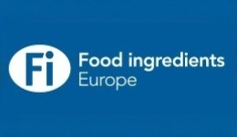
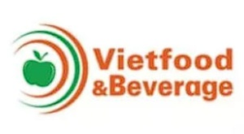

STPP 与 SHMP：工业采购方如何比较这两种磷酸盐
按照化学品识别、功能、等级、规格、物理形态和供应商资格要求对STPP和SHMP进行比较。
阅读采购指南实用的产品比较、供应商资格指南、出口文件说明和百泉化工的公司动态。
最新洞察
围绕规格比较、供应商评估和出口文件准备，帮助采购团队明确产品与目的地市场的要求。

按照化学品识别、功能、等级、规格、物理形态和供应商资格要求对STPP和SHMP进行比较。
阅读采购指南
在采购 MCP 磷酸二氢钙 或 DCP 磷酸氢钙 时，比较营养标识、含量测定、物理形态、污染物限值和文件。
阅读采购指南
在国际化学品订单之前，对规格、SDS、COA、证书、标签和运输文件进行调整。
阅读采购指南
了解等级、规格、杂质限值、制造控制和市场适用性如何改变批准基础。
阅读采购指南
验证企业法律身份、产品来源、规格、质量文件、可追溯性和出口能力。
阅读采购指南1 / 5
展览档案
浏览百泉化工的国际展会记录，并打开每个活动页面，查看日期、地点、展位和产品组合重点。
百泉化工于2025年4月15日至17日参加莫斯科 Global Ingredients Show，展位号为 A512。
查看活动详情
百泉化工于10月9日至11日在胡志明市参加了Fi Vietnam 2024,展位B40。
查看活动详情
百泉化工于4月23日至25日在莫斯科参加了2024年全球成分展(Global Ingredients Show 2024)D115展位。
查看活动详情
百泉化工于11月28日至30日在法兰克福参加了Fi Europe 2023展会，展位号为3.1A33。
查看活动详情
百泉化工于8月10日至12日在胡志明市参加Vietfood & Beverage 2023展会，展位A3.127。
查看活动详情1 / 5
您有关于产品的问题吗？
发送产品、等级、规格和目的地。我们的团队将结合您的要求提供产品和供货信息。